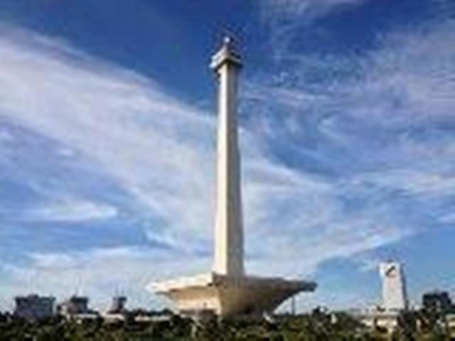

<div class="upage hidden black" id="monas">
            <div class="upage-outer">
                <div class="uib-header header-bg container-group inner-element uib_w_30" data-uib="layout/header" data-ver="0">
                    <h2>Wisata Jakarta</h2>
                    <div class="widget-container wrapping-col single-centered"></div>
                    <div class="widget-container content-area horiz-area wrapping-col left"></div>
                    <div class="widget-container content-area horiz-area wrapping-col right">
                        <button class="btn widget uib_w_50 d-margins mustard btn-default" data-uib="twitter%20bootstrap/button" data-ver="1" id="bckmo"><i class="glyphicon glyphicon-chevron-left" data-position="icon only"></i>
                        </button>
                    </div>
                </div>
                <div class="upage-content ac0 content-area vertical-col left" id="page_12_69"></div>
                <!-- tab -->
                <div class="container">
                    <h3>Monumen Nasional</h3>
                </div>

                <div id="exTab2" class="container">
                    <ul class="nav nav-tabs">
                        <li class="active">
                            <a href="#1" data-toggle="tab">Beranda</a>
                        </li>
                        <li><a href="#2" data-toggle="tab">Informasi</a>
                        </li>
                        <li><a href="#3" data-toggle="tab">Fasilitas</a>
                        </li>
                        <li><a href="#4" data-toggle="tab">Peta</a>
                        </li>
                    </ul>

                    <div class="tab-content ">
                        <div class="tab-pane active" id="1">
                            <h3>Deskripsi Monumen Nasional</h3>
                            <br>
                            <center>
                                
                            </center>

                            <p>Monas mulai dibangun pada bulan Agustus 1959. Keseluruhan bangunan Monas dirancang oleh para arsitek Indonesia yaitu Soedarsono, Frederich Silaban dan Ir. Rooseno. Pada tanggal 17 Agustus 1961, Monas diresmikan oleh Presiden
                                Soekarno. Dan mulai dibuka untuk umum sejak tanggal 12 Juli 1975.</p>

                            <h3>Bangunan Monumen Nasional</h3>
                            <p>Di bagian puncak Tugu terdapat cawan yang dimahkotai lidah api dari perunggu yang beratnya mencapai 14,5 ton yang dilapisi lembaran emas seberat 45 kg. Lidah api atau obor yang tingginya mencapai 17 meter berdiameter 6 meter
                                dan terdiri dari 77 bagian lembaran yang disatukan itu melambangkan semangat perjuangan rakyat Indonesia yang ingin meraih kemerdekaan pada saat itu. Awalnya nyala api perunggu ini dilapisi lembaran emas seberat 35 kg,
                                dan ditambah lagi beratnya saat menyambut perayaan setengah abad (50 tahun) kemerdekaan Indonesia pada tahun 1995. Lapisan emas itu, seberat 28 kg diantaranya adalah sumbangan dari Teuku Markam, seorang pengusaha Aceh yang
                                pernah menjadi salah satu orang terkaya di Indonesia.Di bagian bawah terdapat pelataran cawan seluas 45 x 45 m dengan ketinggian 17 meter diukur dari lantai dasar dan 8 meter dari lantai museum. Hal ini dimaksudkan sebagai
                                catatan hari kemerdekaan republik Indonesia (17-8-45).</p>

                            <div class="container">
                                <div id="myCarousel" class="carousel slide" data-ride="carousel">
                                    <!-- Indicators -->
                                    <ol class="carousel-indicators">
                                        <li data-target="#myCarousel" data-slide-to="0" class="active"></li>
                                        <li data-target="#myCarousel" data-slide-to="1"></li>
                                        <li data-target="#myCarousel" data-slide-to="2"></li>
                                    </ol>

                                    <!-- Wrapper for slides -->
                                    <div class="carousel-inner" role="listbox">
                                        <div class="item active">
                                            
                                        </div>

                                        <div class="item">
                                            
                                        </div>

                                        <div class="item">
                                            
                                        </div>

                                        <div class="item">
                                            
                                        </div>

                                        <div class="item">
                                            
                                        </div>

                                        <div class="item">
                                            
                                        </div>

                                        <div class="item">
                                            
                                        </div>

                                        <div class="item">
                                            
                                        </div>

                                        <div class="item">
                                            
                                        </div>

                                        <div class="item">
                                            
                                        </div>

                                    </div>

                                    <!-- Left and right controls -->
                                    <a class="left carousel-control" href="#myCarousel" data-slide="prev">
                                        <span class="glyphicon glyphicon-chevron-left"></span>
                                        <span class="sr-only">Previous</span>
                                    </a>
                                    <a class="right carousel-control" href="#myCarousel" data-slide="next">
                                        <span class="glyphicon glyphicon-chevron-right"></span>
                                        <span class="sr-only">Next</span>
                                    </a>
                                </div>
                            </div>

                            <!-- end slider -->

                            <p>Di halaman sekeliling monumen, pada tiap sudutnya terdapat relief timbul yang menggambarkan sejarah Indonesia. Relief ini bermula di sudut timur laut dengan mengabadikan kejayaan Nusantara pada masa lampau; menampilkan sejarah
                                Singasari dan Majapahit. Relief ini berlanjut secara kronologis searah jarum jam menuju sudut tenggara, barat daya, dan barat laut. Secara kronologis menggambarkan masa penjajahan Belanda, perlawanan rakyat Indonesia dan
                                pahlawan-pahlawan nasional Indonesia, terbentuknya organisasi modern yang memperjuangkan Indonesia Merdeka pada awal abad ke-20, Sumpah Pemuda, Pendudukan Jepang dan Perang Dunia II, Proklamasi Kemerdekaan Indonesia disusul
                                Revolusi dan Perang kemerdekaan Republik Indonesia, hingga mencapai masa pembangunan Indonesia modern. Sedangkan wilayah taman hutan kota di sekitar Monas dahulu dikenal dengan nama Lapangan Gambir. Kemudian sempat berubah
                                nama beberapa kali menjadi Lapangan Ikada, Lapangan Merdeka, Lapangan Monas dan kemudian menjadi Taman Monas.</p>

                            <h3>Museum Nasional</h3>
                            <p>Di bagian bawah Monas terdapat sebuah ruangan yang luas yaitu Museum Nasional. Tingginya yaitu 8 meter. Museum ini menampilkan sejarah perjuangan Bangsa Indonesia. Luas dari museum ini adalah 80x80 m. Pada keempat sisi museum
                                terdapat 12 diorama (jendela peragaan) yang menampilkan sejarah Indonesia dari jaman kerajaan-kerajaan nenek moyang Bangsa Indonesia hingga G30S PKI.</p>
                        </div>

                        <div class="tab-pane" id="2">
                            <div class="container">
                                <div class="col-md-6 col-sm-6">

                                    <div class="panel-group wrap" id="accordion" role="tablist" aria-multiselectable="true">
                                        <div class="panel">
                                            <div class="panel-heading" role="tab" id="headingOne">
                                                <h4 class="panel-title">
        <a role="button" data-toggle="collapse" data-parent="#accordion" href="#collapseOne" aria-expanded="true" aria-controls="collapseOne">
         Waktu Operasional
        </a>
      </h4>
                                            </div>
                                            <div id="collapseOne" class="panel-collapse collapse in" role="tabpanel" aria-labelledby="headingOne">
                                                <div class="panel-body">
                                                    <h4>Setiap Hari</h4>
                                                    <p>09.00 - 16.00 WIB</p>
                                                </div>
                                            </div>
                                        </div>
                                        <!-- end of panel -->

                                        <div class="panel">
                                            <div class="panel-heading" role="tab" id="headingTwo">
                                                <h4 class="panel-title">
        <a class="collapsed" role="button" data-toggle="collapse" data-parent="#accordion" href="#collapseThree" aria-expanded="false" aria-controls="collapseThree">
          Tiket Masuk
        </a>
      </h4>
                                            </div>
                                            <div id="collapseThree" class="panel-collapse collapse" role="tabpanel" aria-labelledby="headingTwo">
                                                <div class="panel-body">
                                                    <!-- list info -->
                                                    <div class="list-group">
                                                        <a href="#" class="list-group-item  list-group-item-info">

                                                            <h4>Perorangan</h4>
                                                            <br>
                                                            <p>Anak - anak</p>
                                                            <p>Rp 2.000</p>

                                                            <br>
                                                            <p>Dewasa</p>
                                                            <p>Rp 5.000</p>
                                                        </a>

                                                        <a href="#" class="list-group-item list-group-item-success">

                                                            <h4>Masuk Puncak Monumen Nasional</h4>
                                                            <br>
                                                            <p>Anak - anak</p>
                                                            <p>Rp 3.500</p>
                                                            <br>
                                                            <p>Dewasa</p>
                                                            <p>Rp 7.500</p>
                                                        </a>
                                                    </div>
                                                </div>
                                            </div>
                                        </div>
                                        <!-- end of panel -->

                                    </div>
                                    <!-- end of #accordion -->

                                </div>
                                <!-- end of wrap -->

                            </div>
                            <!-- end of container -->
                        </div>

                        <div class="tab-pane" id="3">
                            <h3>Fasilitas Umum</h3>
                            <br>
                            <!-- tab toilet -->
                            <div class="container">
                                <h1></h1>
                            </div>
                            <div id="exTab1" class="container">
                                <ul class="nav nav-pills">
                                    <li class="active">
                                        <a href="#1b" data-toggle="tab">Toilet / Restroom</a>
                                    </li>
                                    <li><a href="#2b" data-toggle="tab">Tempat Ibadah</a>
                                    </li>

                                </ul>

                                <div class="tab-content clearfix">
                                    <div class="tab-pane active" id="1b">
                                        <h3></h3>
                                        <iframe src="toilet36.html" width="100%" height="700px" frameborder="80" style="border:0" allowfullscreen=""></iframe>
                                    </div>
                                    <div class="tab-pane" id="2b">
                                        <h3></h3>
                                        <iframe src="musola36.html" width="100%" height="700px" frameborder="80" style="border:0" allowfullscreen=""></iframe>
                                    </div>
                                </div>
                            </div>

                        </div>

                        <div class="tab-pane" id="4">
                            <h3>Petunjuk Arah Monumen Nasional</h3>
                            <br>
                            <iframe src="monas.html" width="100%" height="700px" frameborder="80" style="border:0" allowfullscreen=""></iframe>
                        </div>
                    </div>
                </div>
            </div>
        </div>
        <!-- end page monas-->